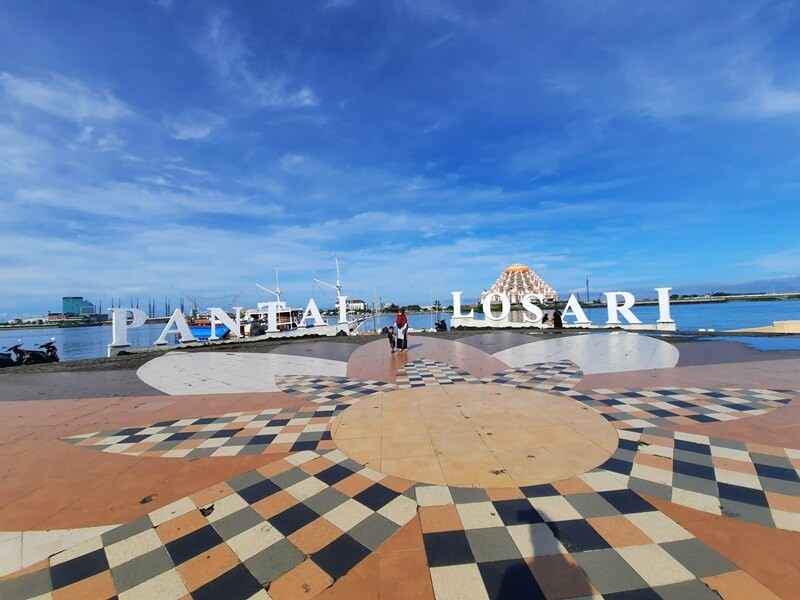
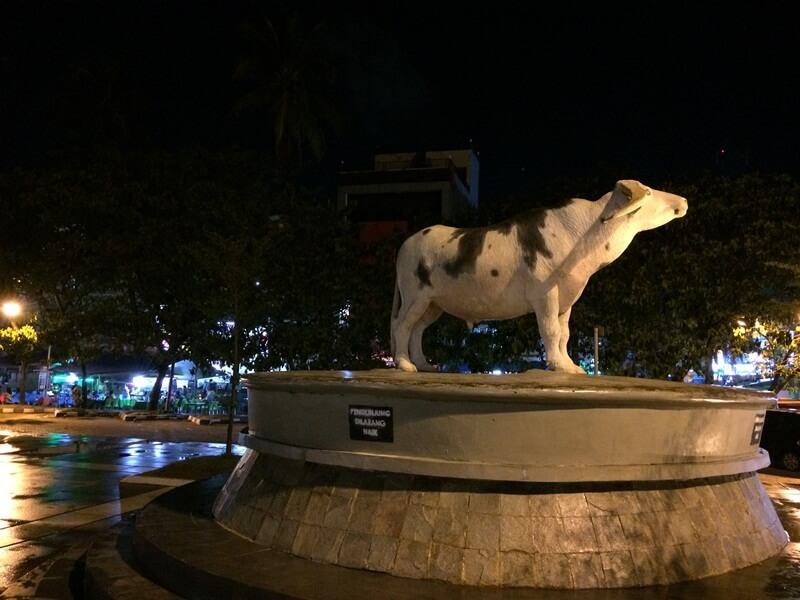
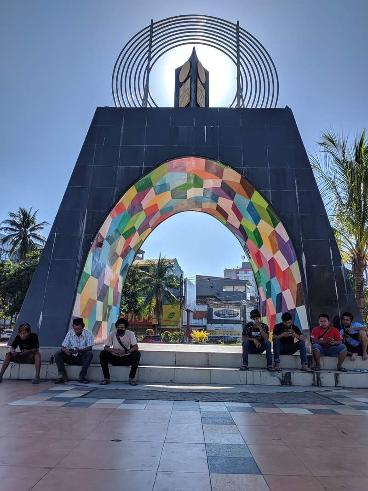
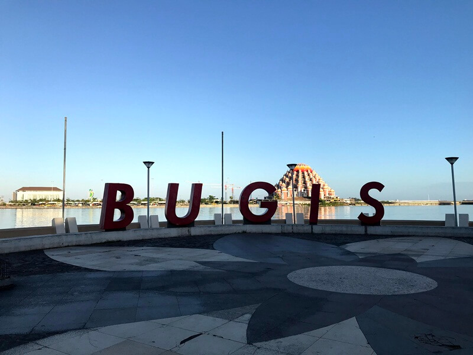
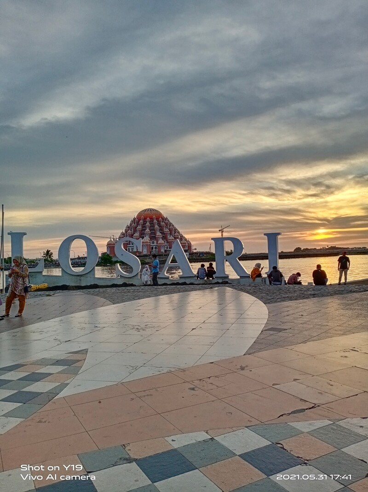
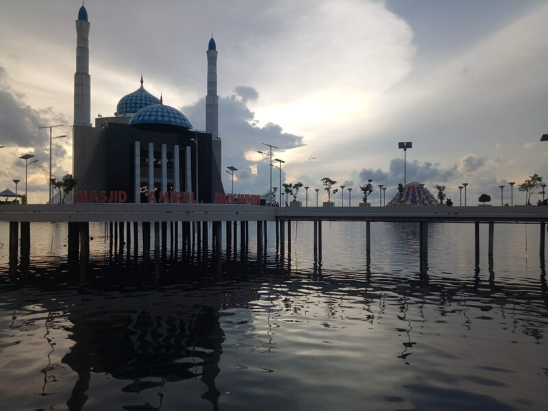
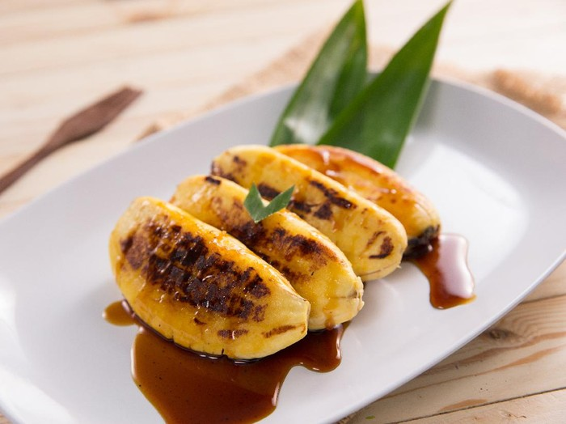

Pantai Losari losari merupakan sebuah kawasan wisata yang menjadi favorit warga Makassar untuk menghabiskan waktu bersama, apalagi di waktu sore maupun akhir pekan. Tidak ada bentangan hamparan pasir di sini, yang ada hanyalah beragam fasilitas serta ornamen-ornamen yang ikonik dan biasanya dijadikan lokasi untuk berfoto. Ketika mengunjungi Makassar, tak lengkap rasanya jika belum mengunjungi Pantai Losari, Karena memang pantai ini merupakan ikon Kota Daeng tersebut.

landmark pantai losari.google maps, sumber:Ahmad Zain
Pantai Losari sempat ditutup beberapa waktu yang lalu, dengan maksud untuk menghindari penyebaran covid-19 lebih luas di Makassar.
Dan saat ini ketika kamu mengunjungi Pantai Losari, pastikan tetap mematuhi protokol kesehatan yang telah dianjurkan oleh Pemerintah ya..
Sejarah Pantai Losari
Pantai Losari di zaman dulu memiliki kisahnya tersendiri, dulunya tempat ini merupakan pasar ikan yang selalu ada di pagi hingga siang hari. Dan di waktu sore hingga malamnya digunakan untuk tempat berjualan beraneka makanan.
Kemudian sekitar tahun 1945 atas ide dari Walikota Makassar pada waktu itu yang bernama DM Van Switten dilakukanlah pembangunan di sekitar pantai.
Pembangunan pun terus berlanjut hingga menjadi sekarang ini. Pantai ini bukan hanya sebagai sebuah tempat wisata saja, di sepanjang Pantai Losari terdapat ukiran sejarah yang ada di sekitar Makassar.

patung kerbau yang ada di anjungan toraja. google maps. sumber: Adrians’s Life
Pantai ini diberi nama Losari belum diketahui apakah diambil dari bahasa Belanda ataukah dari bahasa Makassar. Namun, jika diterjemahkan kedalam bahasa Jawa, Losari terdiri dari dua kata yakni Los dan Ari.
Los artinya area yang digunakan untuk kegiatan jual beli yang terbagi menjadi beberapa toko. Sedangkan Ari diambil dari makna selaput pembungkus atau yang menyalurkan, seperti halnya “ari-ari”.
Lokasi & Alamat Pantai Losari
Lokasi Pantai Losari berada di pusat kota Makassar, tepatnya berada di Jalan Metro Tanjung Bunga, Maloku, Ujung Pandang, Makassar, Sulawesi Selatan.
Rute Menuju Pantai Losari
Rute menuju Pantai Losari sangatlah mudah, setiap orang pasti mengetahui lokasinya. Atau bisa juga dengan mengandalkan maps yang terpasang di hp-mu.
Jika dari arah Bandara Hasanuddin, Makassar akan memakan waktu tempuh sekitar 30 hingga 1 jam perjalanan. Lokasinya berada di pinggir jalan, sehingga dapat dilalui oleh kendaraan jenis apapun.

tugu adipura. google maps. sumber: Siie Cungkring
Jam Buka Pantai Losari
Karena merupakan tempat publik, maka Pantai Losari dibuka setiap hari selama 24 jam nonstop. Waktu terbaik mengunjunginya ialah di sore hari, dimana kamu dapat menyaksikan cantiknya sunset serta suasana malam Pantai Losari yang sangat berbeda.
Tiket Masuk Pantai Losari
Harga tiket masuk Pantai Losari tidak ada alias gratis, kamu hanya perlu mengeluarkan biaya untuk membayar parkir saja.
Daya Tarik Pantai Losari
1. Anjungan Pantai Losari
Ketika menginjakkan kaki di Pantai Losari, bukan hanya keindahan pantainya saja yang dapat dinikmati. Pantai ini memiliki beberapa anjungan yang diberi nama berdasarkan nama suku yang ada di Makassar, seperti Bugis, Makassar, Toraja dan Mandar.
Di setiap anjungan yang ada menampilkan ciri khas dari suku-suku tersebut, sehingga tak sedikit wisatawan yang datang menjadikannya sebagai spot untuk berfoto selain landmark dari Pantai Losari itu sendiri.
Selain itu ada pula patung-patung Pahlawan Sulawesi Selatan, seperti Sultan Hasanudin, Sultan Alauddin, Arung Palakka serta masih banyak lagi yang lainnya.
Ini layaknya kamu memasuki sebuah museum yang ngga membosankan, karena dihiasi alam Pantai Losari yang indah serta semilir angin yang menyejukkan.
2. Spot Sunset
sunset di pantai losari. google maps. sumber: Inggrid Marko
Waktu terbaik mengunjungi Pantai Losari ialah di sore hari, sambil menanti sang mentari kembali ke peraduannya. Suasana sunset yang indah, membuat suasana semakin romantis.
Tidak ada salahnya untuk mengistirahatkan sejenak jiwa dan raga dari kepenatan rutinitas yang seakan tak akan pernah ada habisnya.
Apalagi di seberang Pantai Losari telah ada sebuah objek wisata baru yang bernama Lego-Lego dengan terdapat sebuah masjid unik yang disebut dengan Masjid 99 Kubah.
Masjid tersebut sempat viral beberapa waktu yang lalu. Megahnya masjid sampai terlihat dari area Pantai Losari, meski masih dalam tahap pembangunan.
3. Masjid Terapung
masjid amirul mukminin. google maps. sumber: Abi Lokeen
Jika Lego-Lego memiliki Masjid 99 Kubah, Pantai Losari telah lebih dulu memiliki sebuah masjid unik yang posisinya menjorok ke lautan. Masjid ini bernama Masjid Amirul Mukminin.
Sehingga membuatnya berada di atas laut dan dibuat menyerupai rumah adat tradisional Suawesi Selatan. Masjid terapung ini mulai dibangun sekitar tahun 2009 dan selesai pada tahun 2012 dengan diresmikan oleh Jusuf Kalla.
4. Kuliner Khas Makassar
Ketika mengunjungi Pantai Losari tak lengkap jika tidak mencicipi makanan khasnya, yakni Pisang Epe. Sajian ini terbuat dari pisang raja yang dibakar kemudian dijepit hingga pipih.
Jajanan khas yang satu ini selalu ramai diburu orang apalagi di bulan puasa, sebagai menu pembuka ketika berbuka puasa. Karena rasanya yang manis legit, apalagi ditambah dengan saus gula merah kemudian ditaburi kacang. Wah rasanya enak banget deh…..
Contanct
Nama : Muh Radifansyah R
Alamat : Lauwo
Tanggal Lahir : 17-07-2002
Email : muhradifansyah@gmail.com
Nomor Wa : 082259263823
Facebook : Adii Ti
blog : radif1702.blogspot.com
Nomor Tlp : 082259263823